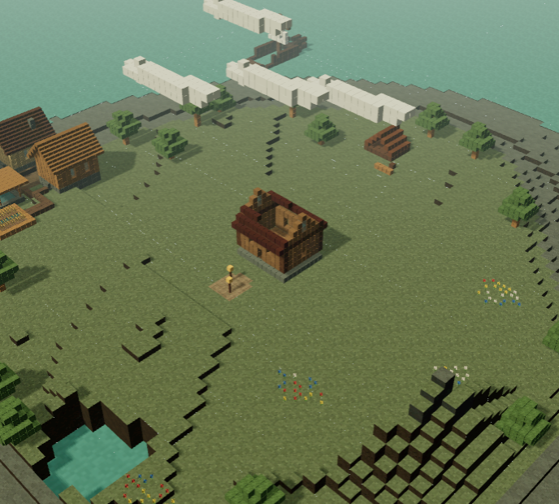

TIME WELL SPENT
今天，也建一点。
每一段专注，都留下形状。

我的聚落 01
一间慢慢长大的工坊场景静帧 · 可打开建筑记忆
当前任务
做一本小小的植物图鉴
收集沿途的植物与叶片
准备开始
25:00
留一小段时间，只做眼前这一件。
1 小时 15 分钟
把想做的事，变成看得见的积累。林间工坊 / 设计提案
ONE THING AT A TIME
把大事，拆成小事。
施工清单
已有投入的清单保留结构；点击小任务，可切换专注对象。
今日目标
已完成 3 轮，还差 5 轮。
3 / 8
SMALL STEPS ADD UP
时间，有迹可循。
过去 26 周的投入
合成记录2026 年 10 月 13 日
1小时15分钟专注时长
3 / 8有效轮次 / 目标
1活跃日
时间花在了哪里
做一本小小的植物图鉴
1 小时 15 分钟纪念建筑
这间工坊还在生长。完成项目后，它会留在这里。
成就
迈出第一步
完成第一轮专注。小小的开始，也值得留下。
MAKE ROOM FOR YOURSELF
调成舒服的样子。
专注节奏
01自动连续专注休息后自动开始下一轮
专注保护与提醒
专注完整性离开超过 3 秒计次
返回专注提醒休息结束后提示继续
世界与外观
02色彩模式深浅之间，保持一样清楚
界面字体像素的温度，或熟悉的字形
减少动态保留状态，减少位移
减少透明度使用稳定的不透明表面
世界、声音与便签
环境声音Demo 展示选择状态，不播放音频
聚落环境、天气、画质、玻璃、便签和资源库在正式方案中收在此组，沿用现有行为。场景预览为真实渲染静帧。
数据与设备
03本地备份导出当前 Demo 的界面偏好
版本、资源与诊断
这是独立设计提案。全部操作仅在当前页面内生效；刷新会重置，不访问方块钟的任务、备份或设备权限。